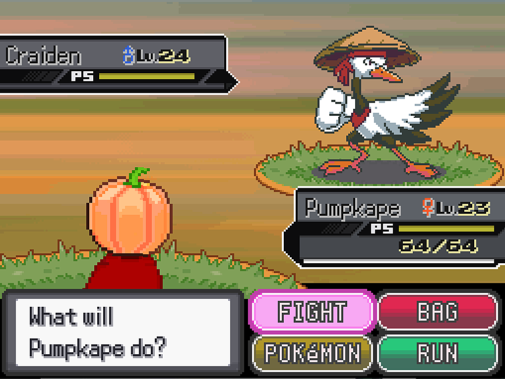
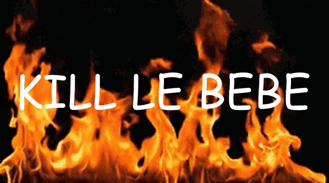
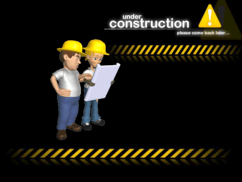
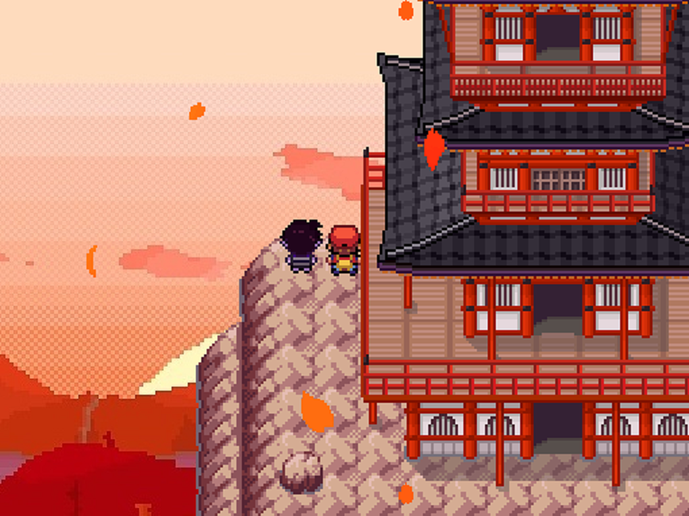

¡Pokémon: Fomemon Edition ya está disponible en su magnífica versión 0.2! ¿Qué estás esperando? Juégala ya... o no, tú decides. Tal vez quieras perderte la experiencia más asombrosa que tendrás en tu vida después del fentanilo. Este fangame es una oda satírica al caos del internet, con más referencias a los videojuegos de las que me gustaría admitir...
¿Te gustan los memes muertos?
¿El humor negro?
¿La exageración de las culturas del internet?
Este fangame es para ti.
Si eres de los que se ofenden fácil, prepárate para llorar (o reír, si tienes buen gusto ).



Adéntrate en Fomevania, una región inspirada en un festival de lo primero que se me venía a la mente.
Cuenta con fakemon de todos los tipos y sabores (literalmente), así como variantes regionales (que por alguna razón la comunidad moderna de jugadores insiste en sobreexplotar). Y, a su vez, disfruta de la maravillosa historia que he escrito. Bueno, llamarla historia es un halago, pero te garantizo que no te la esperas ni en tus sueños más raros.
(Por favor que nadie me recuerde que este fangame es solo un fanfic con pasos extra).

Ahora, para validar mi fangame, voy a incluir las reseñas que han hecho personas de renombre.
Segundo gimnasio disponible: Ahora puedes avanzar hasta el segundo gimnasio y seguir explorando nuevas áreas.
Nuevo sistema de level-cap: El nivel de los Pokémon está limitado por un tope de experiencia, evitando el grindeo excesivo y manteniendo el desafío equilibrado.
Pokédex implementada: La Pokédex ya está disponible, con 151 entradas iniciales y planes para expandirse en futuras versiones.
Nuevas habilidades y movimientos exclusivos: Se han codificado e implementado habilidades únicas, incluyendo un nuevo clima.
Sistema de recompensas diarias: Recibe recompensas especiales al iniciar sesión diariamente, con premios únicos por hitos consecutivos.
Fast-forward mode: Puedes acelerar la velocidad del juego (x2) presionando la tecla F7.
Balanceo de dificultad: El inicio del juego ha sido ajustado para ser más amigable con los jugadores inexpertos.
Rebalanceo de Pokémon: Algunos Pokémon han recibido ajustes en sus estadísticas y habilidades para mejorar el equilibrio en combates.
Nuevos rivales: Se han añadido nuevos rivales al juego, seguramente a algunos los conozcas! y se planean añadir más en un futuro.
Retratos en batallas: Ahora los entrenadores importantes cuentan con retratos personalizados en las transiciones de batalla.
Rework gráfico: Algunos sprites han sido rediseñados para una mejor estética visual.
Nuevos sonidos para Fakemon: Ahora los Fakemon cuentan con efectos de sonido exclusivos.
Visualización de IVs y EVs: El menú de datos muestra de forma detallada los IVs y EVs de cada Pokémon en tu equipo.
Diálogos y trama revisados: Se ha mejorado la claridad y coherencia de los diálogos para una mejor comprensión de la historia.
Efectos y diálogos en combate: Ahora se añaden efectos visuales y diálogos durante los combates importantes.
Diseño de mapas: Los mapas han sido rediseñados para mayor coherencia y ya no tienen bordes en negro visibles.
Repartir experiencia-All y Buscador de objetos: Estas mecánicas clásicas ya están disponibles en el juego.
Pequeños ajustes adicionales: ¡Hay más cambios menores que deberás descubrir por ti mismo! (En realidad se me han olvidado algunas de las cosas que implementé)